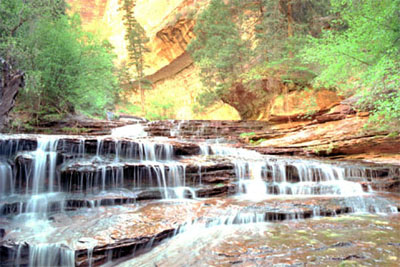

<IMG ID="image1" NAME="imageSwap" SRC="demo/nature/yosemite.jpg"
ONFILTERCHANGE="reBlend( image1, image2, image3 )"
STYLE="position:relative; left:100; top:0; width:400; height:267;
filter: blendTrans( duration = 6 ); z-index: 3">
<IMG ID="image2" SRC="demo/nature/zion.jpg"
ONFILTERCHANGE="reBlend( image2, image3, image4 )"
STYLE="position:relative; visible: false;
left: -300; top: 0; width: 400; height: 267;
filter: blendTrans( duration = 6 ); z-index: 2">
...
<SCRIPT LANGUAGE = "JavaScript">
function blend(to)
{
if(!IEDOM) window.setInterval("swap()", 3000);
else {
to.filters( "blendTrans" ).apply();
to.style.visibility = "hidden";
to.filters( "blendTrans" ).play();
}
}
function reBlend ( from, to ,next)
{
from.style.zIndex -= 2;
to.style.zIndex += 1;
next.style.zIndex += 1;
from.style.visibility = "visible";
blend(to);
}
if(document.images) {
imagex = new Array();
imagex[0] = new Image();
imagex[0].src = "demo/nature/yosemite.jpg";
imagex[1] = new Image();
imagex[1].src = "demo/nature/zion.jpg";
...
}
var iindex=0;
function swap() {
if(iindex < 4) iindex++;
else iindex=0;
document['imageSwap'].src = eval("imagex[" + iindex + "].src");
}
</SCRIPT>

